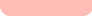
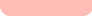

치료프로그램
약물치료는 정신과적 질병의 치료 중
가장 기본이 되는 치료방법입니다.
약물치료는 정신치료나 상담을 포함한 포괄적인 치료 계획의 한 부분입니다.
약물치료시 시기별로 약의 용량을 조정하고 개인적 필요에 따라서는 추가적인 약물을 사용하게 됩니다.
약물치료의 경우 병원에 내원하여 약물 복용과 관련한 충분한 설명과 상담이 필요합니다.
약물을 처방하기 전 면담과 철저한 진단 평가를 하여 진행하며, 환자의 상태에 따라 신체검사, 심리검사,
이화학적 검사, 심전도(EKG), 뇌파검사(EEG)의 검사과정을 거칠 수도 있습니다.
인지행동치료란 개인의 자동적/역기능적 사고를 변화시켜 부적응적 행동을 수정하는 통합적인 치료기법입니다. 이러한 인지행동치료의 목표는 치료자가 직접 상황에 직면시켜 환자 스스로 문제를 파악하도록 돕고 이를 단독으로 해결할 수 있도록 합니다.
인지행동치료는 우울증과 범불안장애, 공황장애, 강박증에 주로 사용되며, 기타 신체형 장애, 신경성 식욕부진증, 건강염려증 등에 사용될 수 있습니다.
치료프로그램
생각을 변화시켜 행동과 감정을 교정하고.
임상적인 증상을 해결하는 치료방법입니다
치료프로그램
전자기장을 이용하여 비침습적으로
국소대뇌피질을 인위적으로 자극시켜
정신질환을 치료하는 기술입니다.

경두개 자기자극 치료술(TMS)은 전자기 코일을 머리 표면의 특정 부위에
놓고 국소적으로 자기장을
두개골을 통해 통과시켜 두뇌의 신경세포를 활성 또는 억제시키도록 하는 새로운 뇌 자극술입니다.
임상연구를 통해 밝혀진 바에 따르면, 적절한 항우울제의 사용에도 치료 효과가 만족스럽지 못한 경우,
또는 좀 더 빠른 효과를 기대하는 경우에 rTMS가 도움이 될 수 있습니다. 우울증 외에도 강박증, 두통
및 신체 통증, 수면장애, 치매, 인지기능 개선 등의 치료에 시도되고 있습니다.


 
